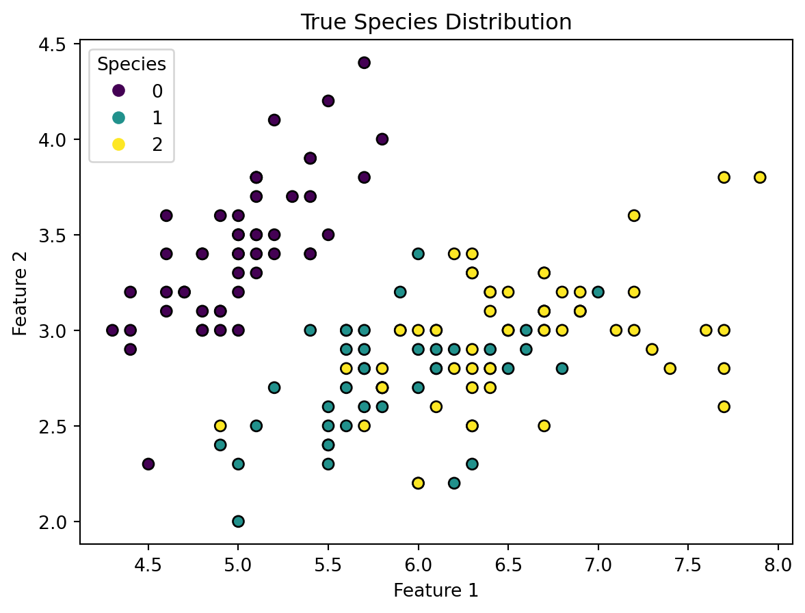
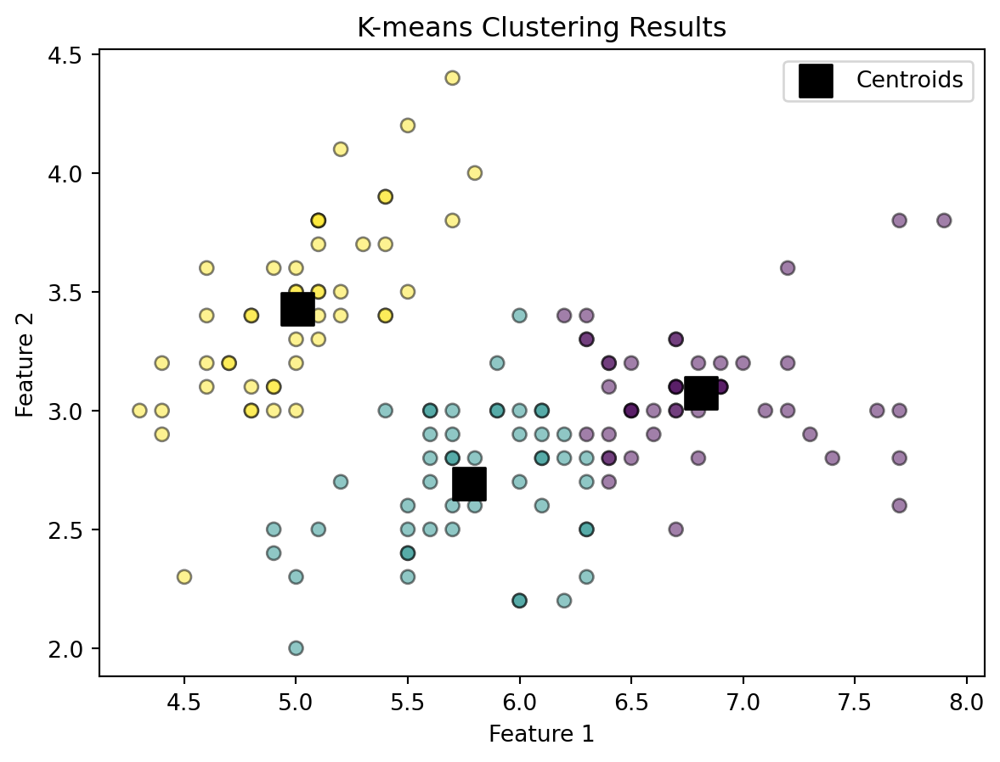
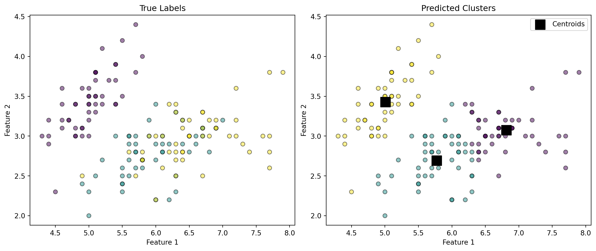
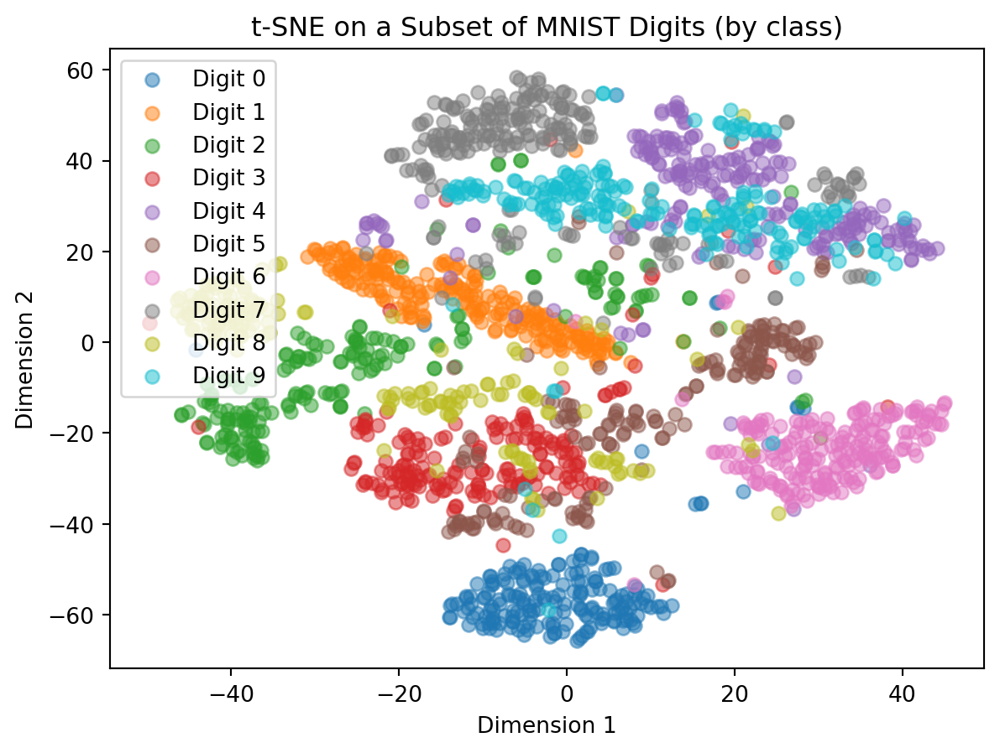
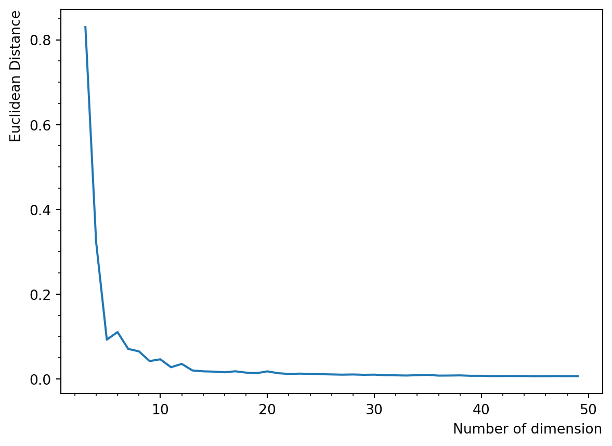
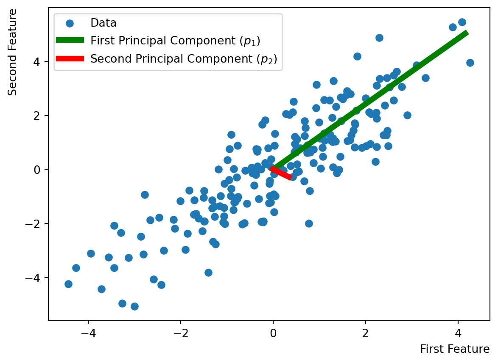
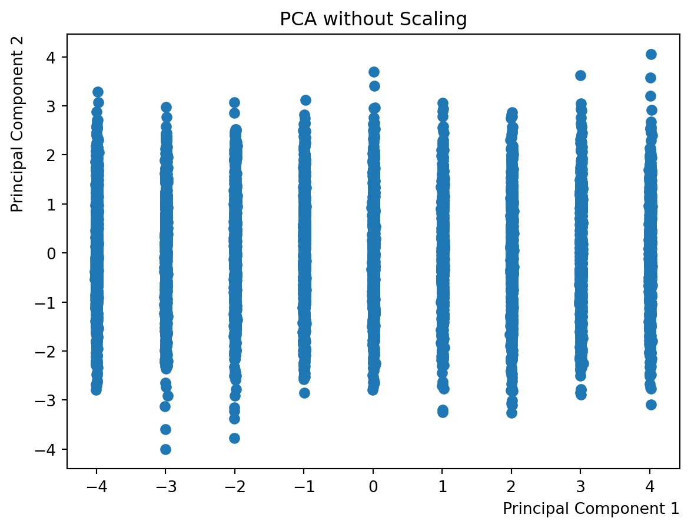
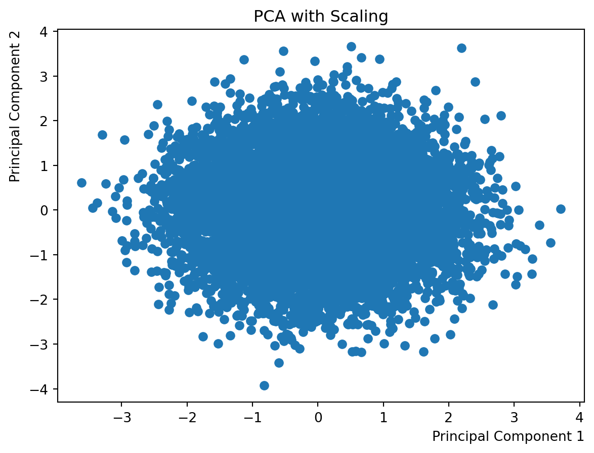

import pandas as pd
import numpy as np
import matplotlib.pyplot as plt
from sklearn import datasets
from sklearn.cluster import KMeans10 Unsupervised Learning
10.1 K-Means Clustering
So far, we have explored various supervised learning algorithms such as Decision Trees and Random Forests, which rely on labeled data with known outcomes. In contrast, unsupervised learning techniques analyze unlabeled data to identify patterns, making them particularly useful for clustering and association problems. Among these, K-means clustering stands out as one of the simplest and most widely used algorithms.
K-means clustering aims to divide a dataset into non-overlapping groups based on similarity. Given a set of data points, each represented as a vector in a multi-dimensional space, the algorithm assigns each point to one of \(k\) clusters in a way that minimizes the variation within each cluster. This is done by reducing the sum of squared distances between each point and its assigned cluster center. Mathematically, we seek to minimize:
\[\begin{equation*} \sum_{i=1}^{k}\sum_{\boldsymbol{x}\in S_i} \left\|\boldsymbol{x}-\boldsymbol{\mu}_i\right\|^2 \end{equation*}\]
where \(S_i\) represents each cluster and \(\boldsymbol{\mu}_i\) is the mean of the points within that cluster.
10.1.1 Lloyd’s Algorithm
K-means clustering is typically solved using Lloyd’s algorithm, which operates iteratively as follows:
- Initialization: Select \(k\) initial cluster centroids \(\boldsymbol{\mu}_i\) randomly.
- Iteration:
Assignment step: Assign each point \(\boldsymbol{x}\) to the cluster whose centroid is closest based on the squared Euclidean distance.
Update step: Recompute the centroids as the mean of all points assigned to each cluster:
\[\begin{equation*} \boldsymbol{\mu}_i \leftarrow \frac{1}{|S_i|} \sum_{\boldsymbol{x}_j \in S_i} \boldsymbol{x}_j \end{equation*}\]
- Termination: The process stops when either the assignments no longer change or a predefined number of iterations is reached.
10.1.2 Example: Iris Data
K-means clustering can be implemented using the scikit-learn library. Below, we apply it to the Iris dataset.
# Load the Iris dataset
iris = datasets.load_iris()
X = iris.data[:, :2] # Using only two features
y = iris.targetWe visualize the observations based on their true species labels.
# Scatter plot of true species labels
fig, ax = plt.subplots()
scatter = ax.scatter(X[:, 0], X[:, 1], c=y,
cmap='viridis', edgecolors='k')
ax.legend(*scatter.legend_elements(), loc="upper left",
title="Species")
plt.xlabel("Feature 1")
plt.ylabel("Feature 2")
plt.title("True Species Distribution")
plt.show()
Now, we apply K-means clustering to the data.
# Train K-means model
Kmean = KMeans(n_clusters=3, init='k-means++',
n_init=10, random_state=42)
Kmean.fit(X)KMeans(n_clusters=3, n_init=10, random_state=42)In a Jupyter environment, please rerun this cell to show the HTML representation or trust the notebook.
On GitHub, the HTML representation is unable to render, please try loading this page with nbviewer.org.
KMeans(n_clusters=3, n_init=10, random_state=42)
Several parameters can be adjusted for better performance. See: <https://scikit-learn.org/stable/modules/generated/ sklearn.cluster.KMeans.html>
K-means provides cluster centroids, representing the center of each cluster.
# Print predicted cluster centers
print("Cluster Centers:")
print(Kmean.cluster_centers_)Cluster Centers:
[[6.81276596 3.07446809]
[5.77358491 2.69245283]
[5.006 3.428 ]]We plot the centroids along with clustered points.
# Plot centroids on the scatter plot
fig, ax = plt.subplots()
ax.scatter(X[:, 0], X[:, 1], c=Kmean.labels_,
cmap='viridis', edgecolors='k', alpha=0.5)
ax.scatter(Kmean.cluster_centers_[:, 0],
Kmean.cluster_centers_[:, 1],
c="black", s=200, marker='s',
label="Centroids")
ax.legend()
plt.xlabel("Feature 1")
plt.ylabel("Feature 2")
plt.title("K-means Clustering Results")
plt.show()
10.1.2.1 Comparing True and Predicted Labels
By plotting the results side by side, we can see how well K-means clustering approximates the true labels.
# Compare true vs. predicted labels
fig, axs = plt.subplots(ncols=2, figsize=(12, 5),
constrained_layout=True)
# True labels plot
axs[0].scatter(X[:, 0], X[:, 1], c=y,
cmap='viridis', alpha=0.5,
edgecolors='k')
axs[0].set_title("True Labels")
axs[0].set_xlabel("Feature 1")
axs[0].set_ylabel("Feature 2")
# Predicted clusters plot
axs[1].scatter(X[:, 0], X[:, 1], c=Kmean.labels_,
cmap='viridis', alpha=0.5,
edgecolors='k')
axs[1].scatter(Kmean.cluster_centers_[:, 0],
Kmean.cluster_centers_[:, 1],
marker="s", c="black", s=200,
alpha=1, label="Centroids")
axs[1].set_title("Predicted Clusters")
axs[1].set_xlabel("Feature 1")
axs[1].set_ylabel("Feature 2")
axs[1].legend()
plt.show()
10.1.3 Making Predictions on New Data
Once trained, the model can classify new data points.
# Sample test data points
sample_test = np.array([[3, 4], [7, 4]])
# Predict cluster assignment
print("Predicted Clusters:", Kmean.predict(sample_test))Predicted Clusters: [2 0]10.1.4 Discussion
K-means is intuitive but has limitations:
- Sensitivity to initialization: Poor initialization can yield suboptimal results.
k-means++mitigates this issue. - Choosing the number of clusters: The choice of \(k\) is critical. The elbow method helps determine an optimal value.
- Assumption of spherical clusters: K-means struggles when clusters have irregular shapes. Alternative methods such as kernel-based clustering may be more effective.
Despite its limitations, K-means is a fundamental tool in exploratory data analysis and practical applications.
10.2 Stochastic Neighbor Embedding
Stochastic Neighbor Embedding (SNE) is a dimensionality reduction technique used to project high-dimensional data into a lower-dimensional space (often 2D or 3D) while preserving local neighborhoods of points. It is particularly popular for visualization tasks, helping to reveal clusters or groupings among similar points. Key characteristics include:
- Unsupervised: It does not require labels, relying on similarity or distance metrics among data points.
- Probabilistic framework: Pairwise distances in the original space are interpreted as conditional probabilities, which SNE attempts to replicate in the lower-dimensional space.
- Common for exploratory data analysis: Especially useful for high-dimensional datasets such as images, text embeddings, or genetic data.
10.2.1 Statistical Rationale
The core idea behind SNE is to preserve local neighborhoods of each point in the data:
For each point \(x_i\) in the high-dimensional space, SNE defines a conditional probability \(p_{j|i}\) that represents how likely \(x_j\) is a neighbor of \(x_i\).
The probability \(p_{j|i}\) is modeled using a Gaussian distribution centered on \(x_i\):
\[ p_{j|i} = \frac{\exp\left(- \| x_i - x_j \|^2 / 2 \sigma_i^2\right)}{\sum_{k \neq i} \exp\left(- \| x_i - x_k \|^2 / 2 \sigma_i^2\right)}, \] where \(\sigma_i\) is a variance parameter controlling the neighborhood size.
Each point \(x_i\) is mapped to a lower-dimensional counterpart \(y_i\), and a corresponding probability \(q_{j|i}\) is defined similarly in that space.
The objective function minimizes the Kullback–Leibler (KL) divergence between the high-dimensional and low-dimensional conditional probabilities, encouraging a faithful representation of local neighborhoods.
10.2.2 t-SNE Variation
The t-SNE (t-distributed Stochastic Neighbor Embedding) addresses two main issues in the original formulation of SNE:
- The crowding problem: In high dimensions, pairwise distances tend to spread out; in 2D or 3D, they can crowd together. t-SNE uses a Student t-distribution (with one degree of freedom) in the low-dimensional space, which has heavier tails than a Gaussian.
- Symmetric probabilities: t-SNE symmetrizes probabilities \(p_{ij} = (p_{j|i} + p_{i|j}) / (2N)\), simplifying computation.
The Student t-distribution for low-dimensional similarity is given by: \[ q_{ij} = \frac{\bigl(1 + \| y_i - y_j \|^2 \bigr)^{-1}}{\sum_{k \neq l} \bigl(1 + \| y_k - y_l \|^2 \bigr)^{-1}}. \] This heavier tail ensures that distant points are not forced too close, thus reducing the crowding effect.
10.2.3 Supervised Variation
Although SNE and t-SNE are fundamentally unsupervised, it is possible to integrate label information. In a supervised variant, distances between similarly labeled points may be reduced (or differently weighted), and additional constraints can be imposed to promote class separation in the lower-dimensional embedding. These approaches can help when partial label information is available and you want to blend supervised and unsupervised insights.
10.2.4 Demonstration with a Subset of the NIST Digits Data
Below is a brief example in Python using t-SNE on a small subset of the MNIST digits (which is itself a curated subset of the original NIST data).
import numpy as np
from sklearn.datasets import fetch_openml
from sklearn.manifold import TSNE
import matplotlib.pyplot as plt
mnist = fetch_openml('mnist_784', version=1)
X = mnist.data[:2000]
y = mnist.target[:2000]
tsne = TSNE(n_components=2, perplexity=30, learning_rate='auto',
init='random', random_state=42)
X_embedded = tsne.fit_transform(X)
# Create a separate scatter plot for each digit to show a legend
plt.figure()
digits = np.unique(y)
for digit in digits:
idx = (y == digit)
plt.scatter(
X_embedded[idx, 0],
X_embedded[idx, 1],
label=f"Digit {digit}",
alpha=0.5
)
plt.title("t-SNE on a Subset of MNIST Digits (by class)")
plt.xlabel("Dimension 1")
plt.ylabel("Dimension 2")
plt.legend()
plt.show()
In the visualization:
- Points belonging to the same digit typically cluster together.
- Ambiguous or poorly written digits often end up bridging two clusters.
- Some digits, such as 3 and 5, may be visually similar and can appear partially overlapping in the 2D space.
10.3 Principal Component Analysis (PCA)
The following section is written by Mezmur Edo, a PhD student in the physics department. This section will focus on the motivation, intuition and theory behind PCA. It will also demonstrate the importance of scaling for proper implementation of PCA.
10.3.1 Motivation
Some of the motivations behind PCA are:
Computation Efficiency
Feature Extraction
Visualization
Curse of dimensionality
10.3.1.1 Curse of Dimensionality
The Euclidean distance between data points, which we represent as vectors, shrinks with the number of dimensions. To demonstrate this, let’s generate 10,000 vectors of n dimensions each, where n ranges from 2 to 50, with integer entries ranging from -100 to 100. By selecting a random vector, Q, of the same dimension, we can calculate the Euclidean distance of Q to each of these 10,000 vectors. The plot below shows the logarithm, to the base 10, of difference between the maximum and minimum distances divided by the minimum distance as a function of the number of dimensions.
#import libraries
import numpy as np
import matplotlib.pyplot as plt
from sklearn.decomposition import PCA
from sklearn.preprocessing import StandardScaler, scale, normalize
import os
import math
from matplotlib.ticker import AutoMinorLocator
#define a list to store delta values
#delta is the logarithm, to the base 10, of difference between
#the maximum and minimum Euclidean distances divided
#by the minimum distance
deltas = []
#loop through dimensions from 2 to 49
for N in range(2, 50):
#generate 10,000 random N-dimensional vectors, P, and
#a single random N-dimensional vector, Q
P = [np.random.randint(-100, 100, N) for _ in range(10000)]
Q = np.random.randint(-100, 100, N)
#calculate the Euclidean distances between each point in P and Q
diffs = [np.linalg.norm(p - Q) for p in P]
#find the maximum and minimum Euclidean distances
mxd = max(diffs)
mnd = min(diffs)
#calculate delta
delta = math.log10(mxd - mnd) / mnd
deltas.append(delta)
#plot delta versus N, the number of dimensions
plt.plot(range(2, 50), deltas)
plt.xlabel('Number of dimension', loc='right', fontsize=10)
plt.ylabel('Euclidean Distance', loc='top', fontsize=10)
ax = plt.gca()
#add minor locators to the axes
ax.xaxis.set_minor_locator(AutoMinorLocator())
ax.yaxis.set_minor_locator(AutoMinorLocator())
plt.show()/var/folders/cq/5ysgnwfn7c3g0h46xyzvpj800000gn/T/ipykernel_88765/2366423172.py:31: RuntimeWarning:
divide by zero encountered in scalar divide

10.3.2 Intuition
We aim to find orthogonal directions of maximum variance in data. Directions with sufficiently low variance in the data can be removed.
rng = np.random.RandomState(0)
n_samples = 200
#generate a 2D dataset with 200 entries from
#a multivariate normal distribution
#with covariances [[3, 3], [3, 4]]
#and mean [0, 0]
X = rng.multivariate_normal(mean=[0,0], \
cov=[[3, 3], [3, 4]], size=n_samples)
#perform PCA on the generated data to find
#the two principal components
pca = PCA(n_components=2).fit(X)
#plot the generated data wih label 'Data'
plt.scatter(X[:,0], X[:,1], label = 'Data')
#plot the first principal component scaled by
#its explained variance
#set color, linewidth and label
first_principal_cpt_explained_var = pca.explained_variance_[0]
first_principal_cpt = [[0, pca.components_[0][0]*first_principal_cpt_explained_var] \
, [0, pca.components_[0][1]*first_principal_cpt_explained_var]]
plt.plot(first_principal_cpt[0], first_principal_cpt[1] \
, color='green', linewidth=5 \
, label = r'First Principal Component ($p_1$)')
#plot the second principal component scaled by
#its explained variance
#set color, linewidth and label
second_principal_cpt_explained_var = pca.explained_variance_[1]
second_principal_cpt = [[0, pca.components_[1][0]*second_principal_cpt_explained_var] \
, [0, pca.components_[1][1]*second_principal_cpt_explained_var]]
plt.plot(second_principal_cpt[0], second_principal_cpt[1] \
, color='red', linewidth=5 \
, label = r'Second Principal Component ($p_2$)')
plt.title("")
plt.xlabel("First Feature", loc = 'right', fontsize = 10)
plt.ylabel("Second Feature", loc = 'top', fontsize = 10)
plt.legend()
plt.show()
We can then project the data onto the first principal component direction, \(p_1\).
10.3.3 Theory
Let \(x\) be a data point with features \(f_1\), \(f_2\), \(f_3\), …, \(f_n\),
\[x = \begin{pmatrix} f_1\\ f_2\\ f_3\\ .\\ .\\ .\\ f_n \end{pmatrix}. \]
The projection of x onto p is then,
\[x^{T} \frac{p}{||p||}.\]
Hence, the projection of all data points onto the principal component direction, p, can be written as,
\[\begin{pmatrix} x_1^{T} \frac{p}{||p||}\\ x_2^{T} \frac{p}{||p||}\\ x_3^{T} \frac{p}{||p||}\\ .\\ .\\ .\\ x_m^{T} \frac{p}{||p||} \end{pmatrix} = X\frac{p}{||p||},\]
where:
- X is the design matrix consisting m datapoints.
10.3.3.1 The Optimization Problem
Let \(\bar{x}\) be the sample mean vector such that,
\[\bar{x} = \frac{1}{m}\sum_{i=1}^{m}x^{(i)}.\]
The sample covariance matrix is then given by,
\[S = \frac{1}{m} X^TX - \bar{x}\bar{x}^T,\]
where:
- \(S_{ij}\) is the covarance of feature i and feature j.
For a sample mean of the projected data, \(\bar{a}\),
\[\bar{a} = \frac{1}{m}\sum_{i=1}^{m}x^{(i)T}p = \bar{x}^Tp,\]
the sample variance of the projected data can be written as,
\[\sigma^{2}= \frac{1}{m}\sum_{i=1}^{m}(x^{(i)T}p)^2 - \bar{a}^{2} = p^{T}Sp.\]
Then, our optimization problem simplifies to maximizing the sample variance,
\[\max_p \space p^{T}Sp \space s.t. ||p||=1,\]
which has the following solution,
\[Sp = \lambda p.\]
10.3.3.2 Scikit-learn Implementation
Computation can be done using the single value decomposition of X,
\[X = U \Sigma V^T.\]
If the data is mean-centered (the default option in scikit-learn), the sample covariance matrix is given by,
\[S = \frac{1}{m} X^TX = \frac{1}{m} V\Sigma U^T U \Sigma V^T = V\frac{1}{m}\Sigma^2V^T,\]
which is the eigenvalue decomposition of S, with its eigenvectors as the columns of \(V\) and the corresponding eigenvalues as diagonal entries of \(\frac{1}{m}\Sigma^2\).
The variance explained by the j-th principal component, \(p_j\), is \(\lambda_{j}\) and the total variance explained is the sum of all the eigenvalues, which is also equal to the trace of S. The total variance explained by the first k principal componentsis then given by,
\[\frac{\sum_{j=1}^{k} \lambda_j}{trace(s)}.\]
10.3.4 PCA With and Without Scaling
For proper implementation of PCA, data must be scaled. To demonstrate this, we generate a dataset with the first 4 features selected from a normal distribution with mean 0 and standard deviation 1. We then append a fifth feature drawn from a uniform distribution with integer entries ranging from 1 to 10. The plot of the projection of the data onto first principal component versus the projection onto the second principal component does not show the expected noise structure unless the data is scaled.
np.random.seed(42)
#generate a feature of size 10,000 with integer entries
#ranging from 1 to 10
feature = np.random.randint(1, 10, 10000)
N = 10000
P = 4
#generate a 4D dataset drawn from a normal distribution of 10,000 entries
#then append the feature to X, making it a 5D dataset
X = np.random.normal(size=[N,P])
X = np.append(X, feature.reshape(10000,1), axis = 1)
#perform PCA with 2 components on the dataset without scaling
pca = PCA(2)
pca_no_scale = pca.fit_transform(X)
#plot the projection of the data onto the first principal
#component versus the projection onto
#the second principal component
plt.scatter(pca_no_scale[:,0], pca_no_scale[:,1])
plt.title("PCA without Scaling")
plt.xlabel("Principal Component 1", loc = 'right', fontsize = 10)
plt.ylabel("Principal Component 2", loc = 'top', fontsize = 10)
plt.show()
#scale data, mean-center and divide by the standard deviation
Xn = scale(X)
#perform PCA with 2 components on the scaled data
pca = PCA(2)
pca_scale = pca.fit_transform(Xn)
#plot the projection of the data onto the first principal
#component versus the projection onto
#the second principal component
plt.scatter(pca_scale[:,0], pca_scale[:,1])
plt.title("PCA with Scaling")
plt.xlabel("Principal Component 1", loc = 'right', fontsize = 10)
plt.ylabel("Principal Component 2", loc = 'top', fontsize = 10)
plt.show()

10.3.5 Summary
PCA is a dimensionality reduction technique that projects data onto directions which explain the most variance in the data.
The principal component directions are the eigenvectors of the sample covariance matrix and the corresponding eigenvalues represent the variances explained.
For proper implementation of PCA, data must be mean-centered, scikit-learn default, and scaled.